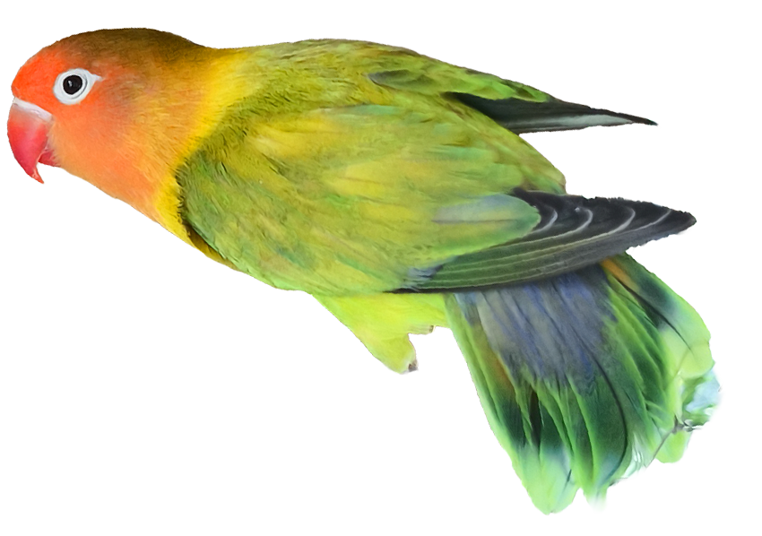
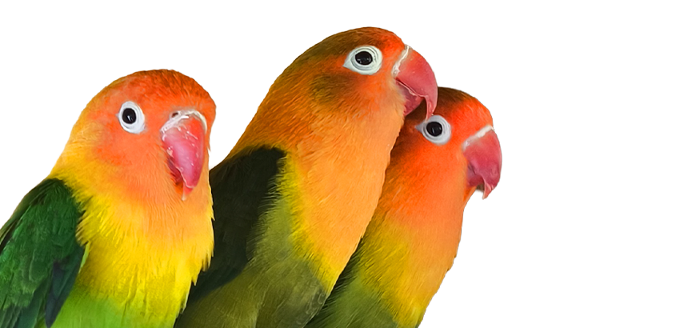

HORARIOS
Todos los días
9:00 am - 4:00 pm
TODO LO QUE NECESITAS SABER


AQUÍ TIENES LA INFORMACIÓN ESENCIAL PARA PREPARAR TU VISITA
9:00 am - 4:00 pm
***Niños menores de 5 años deben ingresar en compañia de un adulto responsable
Vereda lluviosos, a 3km del municipio
***Puedes quedarte el tiempo que quieras y disfrutar de nuestras instalaciones.
*** Recomendamos llevar protección solar,hidratación y ropa adecuada para caminar y disfrutar del recorrido.
**Respeta a los animales.
** Cuida jardines y senderos.
** Deposita los residuos en su lugar.
** Disfruta el museo con respeto.
Puedes reservar a través de nuestro WhatsApp 321 229 6846.
Transferencia Bancaria: Cuenta de ahorros Davivienda.
Numero: 108900726051 NIT: 901848513-5 Parque Ecológico El Rincón
Transfiya / Llave: @9018485135 Parque Ecológico El Rincón
Pago Presencial: Directamente en efectivo en la taquilla del parque.
En El Rincón podrás conocer diferentes animales, entre ellos gallinas de exhibición, pavos reales, faisanes y marranitos. También podrás recorrer nuestra cabaña y disfrutar de un espectacular museo, además de nuestros espacios naturales.
No. El acceso al museo y la cabaña está incluido en el valor de la entrada al parque.
¡Claro! Contamos con parqueadero para nuestros visitantes, disponible durante el tiempo que permanezcas en el parque.
Estamos en el corazón de la montaña y la lluvia es parte de nuestra naturaleza. Nuestras actividades no se suspenden por lluvia leve.
Te recomendamos traer ropa cómoda y una chaqueta impermeable. Solo realizamos reembolsos si el parque determina que existe un riesgo de seguridad.
¡Claro que sí!
Siempre que nos avises con más de 24 horas de anticipación, podrás solicitar la reprogramación, sujeta a disponibilidad.
Si la cancelación ocurre con menos de 24 horas, no aplica devolución ni cambio de fecha.
No contamos con restaurante,
Pero ¡sí! Contamos con una cafetería para disfrutar un café en la montaña y una tienda de recuerdos.
¡Claro! Contamos con opciones para grupos y empresas. Comunícate con nosotros a través de nuestro WhatsApp 321 229 6846 para conocer las alternativas disponibles.
Desde Tunja toma la carretera pavimentada hacia Villa de Leyva hasta llegar al municipio de Cucaita.
Una vez en el casco urbano de Cucaita, toma la vía hacia la Vereda Pijaos
y continúa aproximadamente 3 km hasta encontrar la entrada principal del parque.
También puedes encontrarnos en Waze y Google Maps como Parque Ecológico El Rincón.